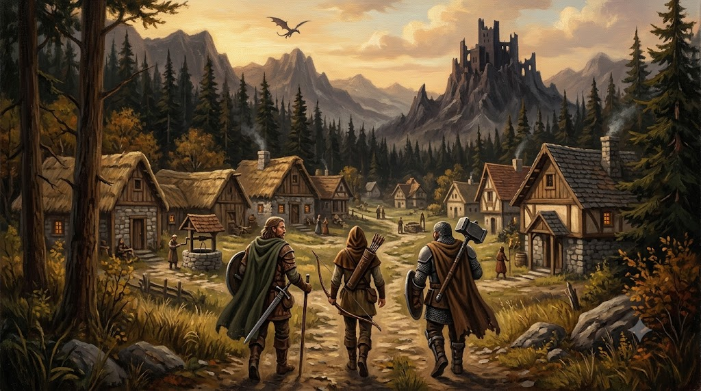
Тихая деревня на краю королевства — сердце жизни героев. Здесь есть лавка, рынок, арена, лекарь и доска заданий.
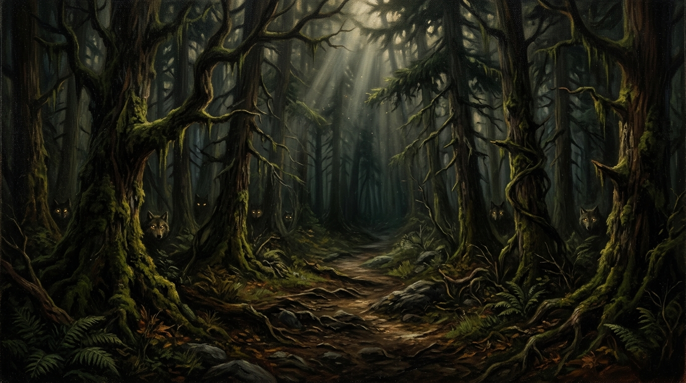
Древние деревья заслоняют солнце. Между стволами рыщут волки, кабаны и гоблины-разведчики.
| Монстр | Ур. | ❤️ HP | ⚔️ Атака | ✨ Опыт | 🪙 Серебро | 🎁 Дроп |
|---|---|---|---|---|---|---|
| Лесной волк | 1 | 25 | 5 | 14 | 3–8 | ⚪️ Волчья шкура 45% ⚪️ Малое зелье лечения 10% 🔵 Самоцвет 2% |
| Дикий кабан | 2 | 38 | 7 | 20 | 5–12 | ⚪️ Клык кабана 40% ⚪️ Малое зелье лечения 10% 🔵 Самоцвет 2% |
| Лесной паук | 3 | 45 | 9 | 27 | 7–15 | 🟢 Паучий шёлк 35% ⚪️ Деревянная дубина 6% 🔵 Самоцвет 2% |
| Гоблин-разведчик | 4 | 55 | 11 | 35 | 10–22 | ⚪️ Ухо гоблина 50% ⚪️ Охотничий лук 5% 🔵 Самоцвет 2% |
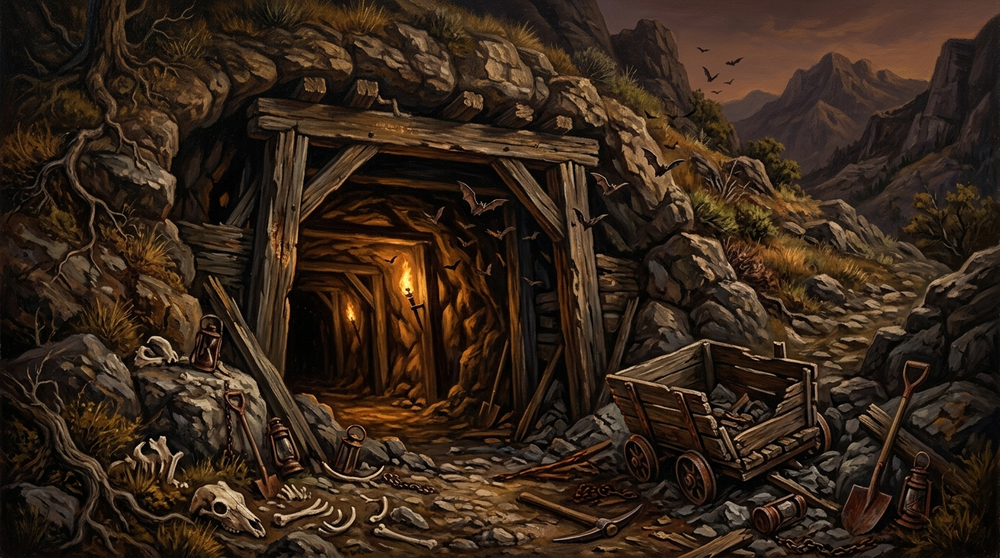
Заброшенные шахты, где теперь хозяйничают гоблины и нежить. Говорят, в глубине живёт тролль.
| Монстр | Ур. | ❤️ HP | ⚔️ Атака | ✨ Опыт | 🪙 Серебро | 🎁 Дроп |
|---|---|---|---|---|---|---|
| Пещерная летучая мышь | 4 | 50 | 12 | 34 | 8–18 | ⚪️ Крыло летучей мыши 50% 🔵 Самоцвет 3% |
| Гоблин-воин | 5 | 70 | 14 | 45 | 12–26 | ⚪️ Ухо гоблина 50% ⚪️ Железный меч 6% 🔵 Самоцвет 3% |
| Скелет | 6 | 85 | 16 | 55 | 15–30 | 🟢 Костяная пыль 45% 🟢 Кольчуга 4% 🔵 Самоцвет 3% |
| Пещерный тролль | 8 | 130 | 20 | 85 | 25–50 | 🔵 Шкура тролля 40% 🟢 Стальной топор 7% 🟢 Среднее зелье лечения 15% 🔵 Самоцвет 3% |
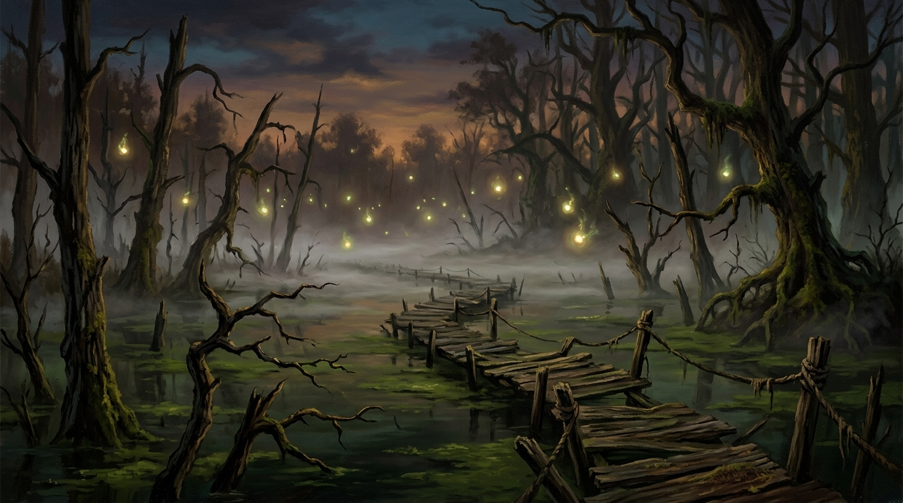
Туман, трясина и запах гнили. Здесь пропадают даже опытные путники — а те, кто возвращается, приносят ценную эссенцию.
| Монстр | Ур. | ❤️ HP | ⚔️ Атака | ✨ Опыт | 🪙 Серебро | 🎁 Дроп |
|---|---|---|---|---|---|---|
| Гигантская пиявка | 8 | 110 | 19 | 75 | 18–38 | ⚪️ Слизь пиявки 50% 🔵 Самоцвет 3% |
| Упырь | 10 | 150 | 24 | 100 | 25–55 | 🟢 Коготь упыря 45% 🟢 Серебряная сабля 5% 🔵 Самоцвет 3% |
| Болотная ведьма | 11 | 160 | 28 | 120 | 30–65 | 🔵 Болотная эссенция 35% 🔵 Большое зелье лечения 12% 🔵 Самоцвет 3% |
| Болотный ужас | 13 | 220 | 32 | 160 | 45–90 | 🔵 Болотная эссенция 50% 🔵 Клинок рыцаря 5% 🔵 Самоцвет 3% |
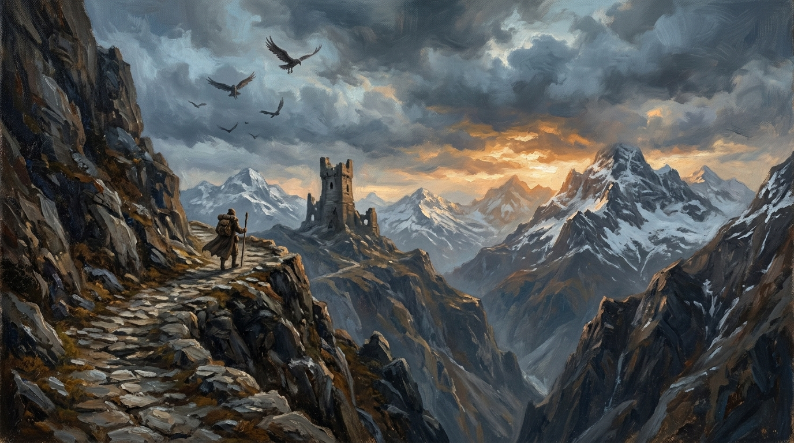
Ледяной ветер и отвесные скалы. На перевале охотятся гарпии, а из камня поднимаются древние големы.
| Монстр | Ур. | ❤️ HP | ⚔️ Атака | ✨ Опыт | 🪙 Серебро | 🎁 Дроп |
|---|---|---|---|---|---|---|
| Горный волк | 13 | 200 | 33 | 150 | 40–80 | ⚪️ Волчья шкура 60% 🟢 Среднее зелье лечения 15% 🔵 Самоцвет 4% |
| Гарпия | 14 | 220 | 37 | 175 | 45–95 | 🟢 Перо гарпии 50% 🟢 Чешуйчатый доспех 5% 🔵 Самоцвет 4% |
| Каменный голем | 16 | 300 | 40 | 220 | 60–120 | 🔵 Ядро голема 35% 🔵 Боевой молот 5% 🔵 Самоцвет 4% |
| Огр | 18 | 360 | 48 | 280 | 80–160 | 🟢 Зуб огра 50% 🔵 Латный доспех 5% 🔵 Большое зелье лечения 15% 🔵 Самоцвет 4% |
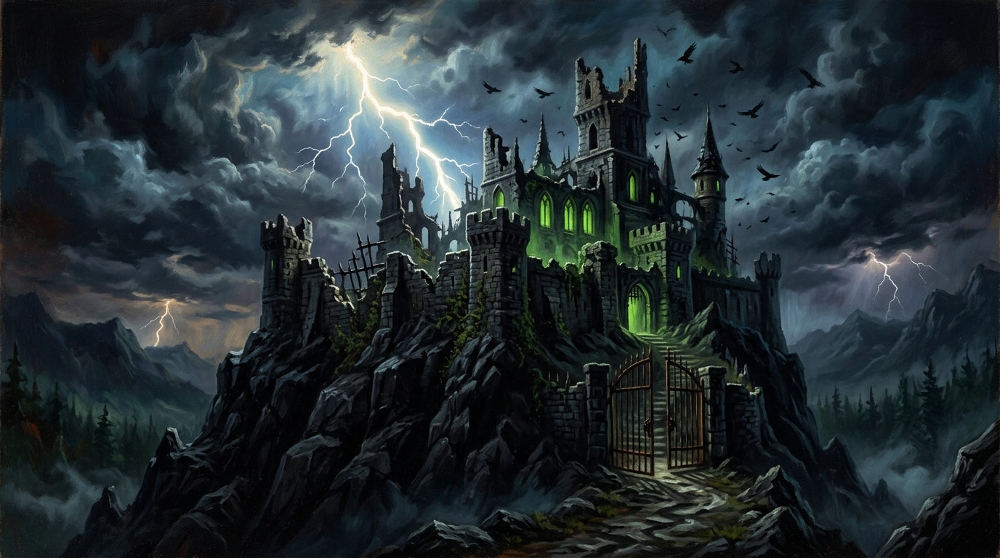
Резиденция падшего лорда-вампира. Лишь сильнейшие герои осмеливаются войти в эти ворота.
| Монстр | Ур. | ❤️ HP | ⚔️ Атака | ✨ Опыт | 🪙 Серебро | 🎁 Дроп |
|---|---|---|---|---|---|---|
| Проклятый рыцарь | 19 | 380 | 52 | 320 | 90–180 | 🔵 Проклятая эмблема 45% 🔵 Клинок рыцаря 8% 🔵 Самоцвет 5% |
| Призрак | 21 | 420 | 60 | 380 | 100–210 | 🔵 Проклятая эмблема 50% 🟣 Кинжал теней 4% 🔵 Самоцвет 5% |
| Горгулья | 23 | 500 | 65 | 450 | 120–240 | 🟣 Осколок кристалла 30% 🟣 Зачарованная мантия 4% 🔵 Самоцвет 5% |
| Лорд-вампир | 25 | 600 | 75 | 600 | 160–320 | 🟣 Клык вампира 40% 🟣 Пламенный меч 5% 🟠 Древняя реликвия 2% 🔵 Самоцвет 5% |
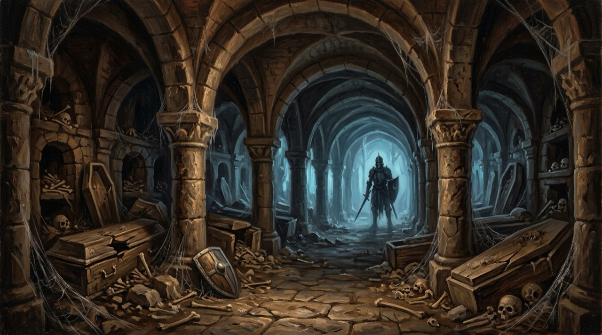
Под старым кладбищем тянутся бесконечные галереи. Шуршит могильный прах, а во тьме гремят кости давно павших рыцарей.
| Монстр | Ур. | ❤️ HP | ⚔️ Атака | ✨ Опыт | 🪙 Серебро | 🎁 Дроп |
|---|---|---|---|---|---|---|
| Упырь склепа | 26 | 680 | 78 | 700 | 180–360 | ⚪️ Могильный прах 50% 🔵 Большое зелье лечения 8% 🔵 Самоцвет 6% |
| Костяной рыцарь | 28 | 780 | 84 | 820 | 210–420 | ⚪️ Могильный прах 40% 🟢 Кость лича 25% 🟣 Костяной доспех 4% 🔵 Самоцвет 6% |
| Могильный призрак | 29 | 850 | 88 | 900 | 230–460 | 🟢 Кость лича 45% 🟣 Обсидиановый клинок 4% 🔵 Самоцвет 6% |
| Прислужник лича | 31 | 950 | 93 | 1050 | 260–520 | 🟢 Кость лича 50% 🟣 Обсидиановый клинок 5% 🔵 Большое зелье лечения 12% 🔵 Самоцвет 6% |
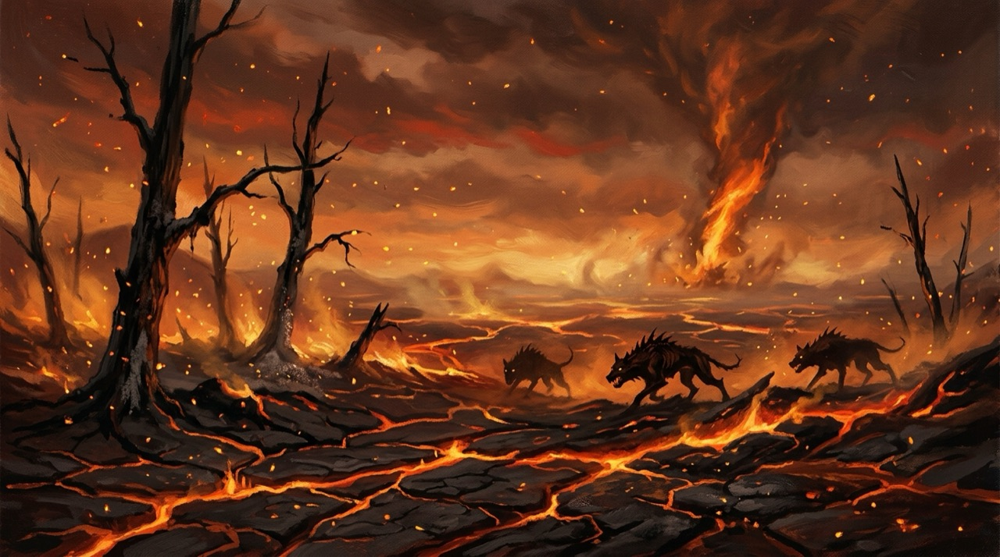
Выжженная дотла земля дышит жаром. Среди пепла рыщут гончие, а из трещин вырывается подземное пламя.
| Монстр | Ур. | ❤️ HP | ⚔️ Атака | ✨ Опыт | 🪙 Серебро | 🎁 Дроп |
|---|---|---|---|---|---|---|
| Пепельная гончая | 32 | 1050 | 96 | 1150 | 280–560 | 🟢 Тлеющий осколок 50% 🔵 Самоцвет 7% |
| Огненный бес | 34 | 1200 | 102 | 1350 | 310–620 | 🟢 Тлеющий осколок 45% 🔵 Рог демона 20% 🟣 Великое зелье лечения 5% 🔵 Самоцвет 7% |
| Магмовый голем | 36 | 1300 | 108 | 1550 | 340–680 | 🔵 Рог демона 35% 🟣 Адская кольчуга 4% 🔵 Самоцвет 7% |
| Пламенный джинн | 38 | 1350 | 114 | 1800 | 380–760 | 🔵 Рог демона 45% 🟣 Демонический тесак 5% 🔵 Самоцвет 7% |
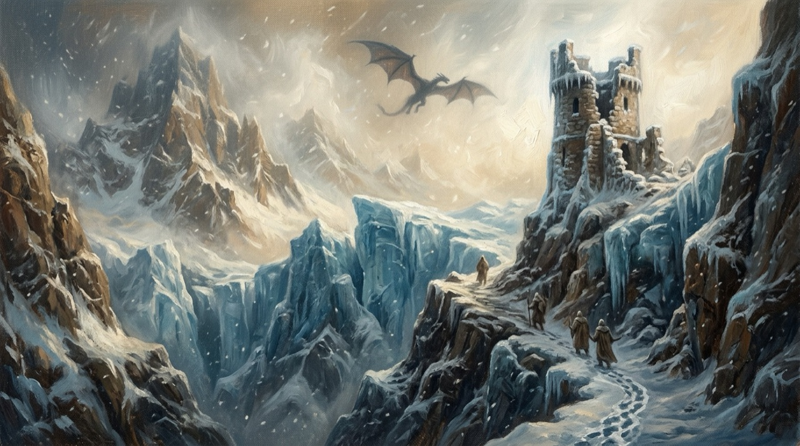
Вечная метель воет между ледяными скалами. Мороз пробирает до костей, а в белой мгле мелькают крылатые тени.
| Монстр | Ур. | ❤️ HP | ⚔️ Атака | ✨ Опыт | 🪙 Серебро | 🎁 Дроп |
|---|---|---|---|---|---|---|
| Морозный волк | 39 | 1500 | 117 | 2000 | 420–840 | 🟢 Вечный лёд 50% 🟣 Великое зелье лечения 6% 🔵 Самоцвет 8% |
| Ледяная тень | 41 | 1650 | 123 | 2250 | 460–920 | 🟢 Вечный лёд 45% 🟠 Ледниковая броня 2% 🔵 Самоцвет 8% |
| Снежный тролль | 42 | 1750 | 126 | 2450 | 500–1000 | 🟢 Вечный лёд 40% 🟠 Секира вечной зимы 2% 🔵 Самоцвет 8% |
| Ледяная виверна | 44 | 1900 | 132 | 2750 | 550–1100 | 🔵 Чешуя виверны 50% 🟠 Ледниковая броня 2% 🔵 Самоцвет 8% |
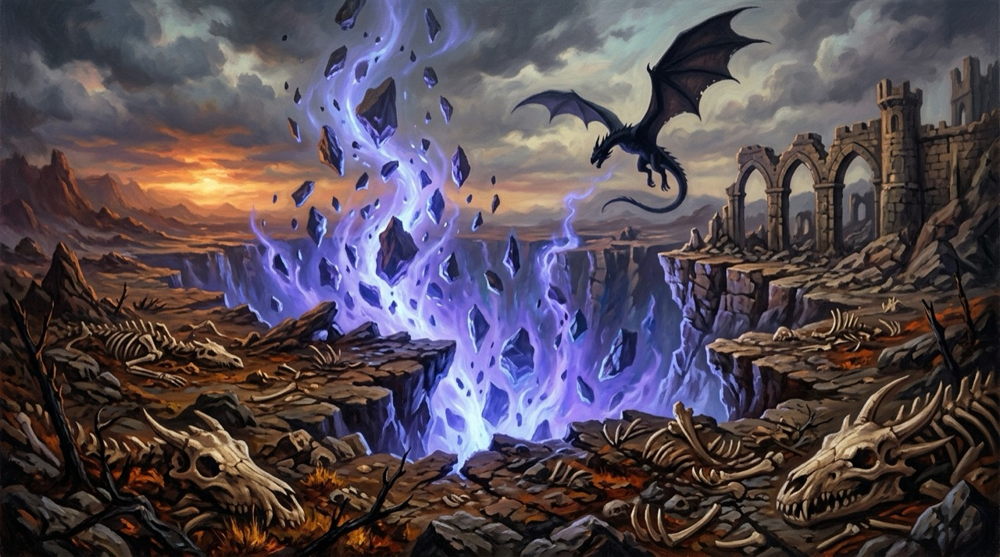
Расколотая земля, из которой сочится древняя магия. Здесь гнездятся драконы — и лишь величайшие герои возвращаются отсюда живыми.
| Монстр | Ур. | ❤️ HP | ⚔️ Атака | ✨ Опыт | 🪙 Серебро | 🎁 Дроп |
|---|---|---|---|---|---|---|
| Сталкер разлома | 45 | 2100 | 135 | 3000 | 600–1200 | 🔵 Драконья кровь 40% 🟣 Кристалл разлома 12% 🔵 Самоцвет 10% |
| Юный дрейк | 47 | 2300 | 141 | 3400 | 650–1300 | 🔵 Драконья кровь 45% 🔵 Чешуя виверны 30% 🔵 Самоцвет 10% |
| Драконий жрец | 48 | 2500 | 144 | 3700 | 700–1400 | 🟣 Кристалл разлома 30% 🟠 Клинок Повелителя драконов 2% 🟣 Великое зелье лечения 10% 🔵 Самоцвет 10% |
| Древний дракон | 50 | 2900 | 150 | 4300 | 800–1600 | 🔵 Драконья кровь 50% 🟣 Кристалл разлома 25% 🟠 Клинок Повелителя драконов 2% 🟠 Латы Повелителя драконов 2% 🔵 Самоцвет 12% |
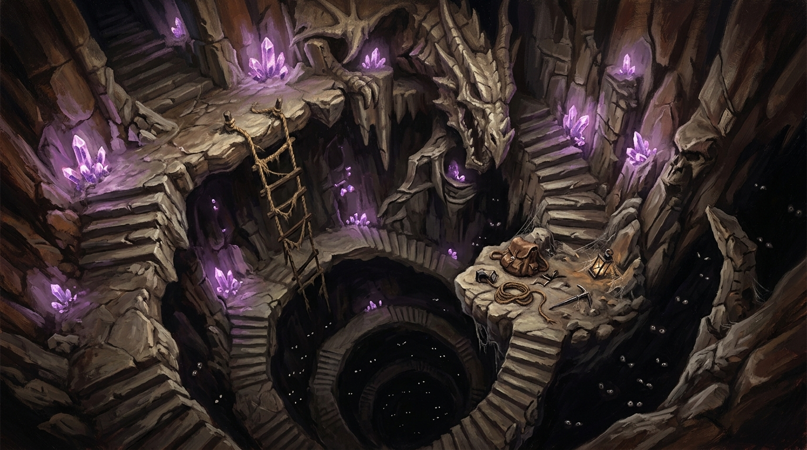
Бездонная пропасть под Драконьим разломом. Из чернильной тьмы смотрят глаза тварей, никогда не видевших солнца.
| Монстр | Ур. | ❤️ HP | ⚔️ Атака | ✨ Опыт | 🪙 Серебро | 🎁 Дроп |
|---|---|---|---|---|---|---|
| Порождение бездны | 52 | 3000 | 155 | 4400 | 850–1700 | 🔵 Эссенция бездны 50% 🟣 Великое зелье лечения 8% 🔵 Самоцвет 12% |
| Страж бездны | 56 | 3200 | 162 | 4700 | 900–1800 | 🔵 Эссенция бездны 45% 🟣 Жемчужина бездны 20% 🔵 Самоцвет 12% |
| Ужас тьмы | 60 | 3500 | 168 | 5000 | 950–1900 | 🟣 Жемчужина бездны 35% 🟣 Панцирь бездны 2% 🔵 Самоцвет 12% |
| Владыка бездны | 64 | 3800 | 175 | 5400 | 1000–2000 | 🟣 Жемчужина бездны 45% 🟣 Клинок бездны 2% 🟣 Великое зелье лечения 10% 🔵 Самоцвет 13% |
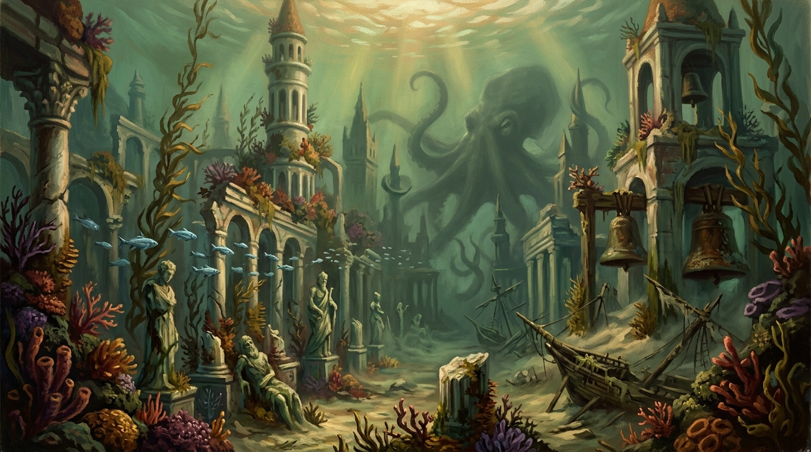
Древний город, поглощённый морем за грехи его жителей. По коралловым улицам бродят утопшие, а с башен поют сирены.
| Монстр | Ур. | ❤️ HP | ⚔️ Атака | ✨ Опыт | 🪙 Серебро | 🎁 Дроп |
|---|---|---|---|---|---|---|
| Утопший моряк | 70 | 4100 | 182 | 5800 | 1100–2200 | 🔵 Чешуя сирены 45% 🟠 Титаническое зелье лечения 5% 🔵 Самоцвет 13% |
| Сирена | 75 | 4400 | 190 | 6200 | 1150–2300 | 🔵 Чешуя сирены 50% 🟣 Чернила кракена 18% 🔵 Самоцвет 13% |
| Страж глубин | 80 | 4800 | 198 | 6700 | 1250–2500 | 🟣 Чернила кракена 35% 🟣 Кольчуга глубин 2% 🔵 Самоцвет 13% |
| Жрец кракена | 84 | 5200 | 205 | 7200 | 1300–2600 | 🟣 Чернила кракена 45% 🟣 Клык кракена 2% 🟠 Титаническое зелье лечения 7% 🔵 Самоцвет 14% |
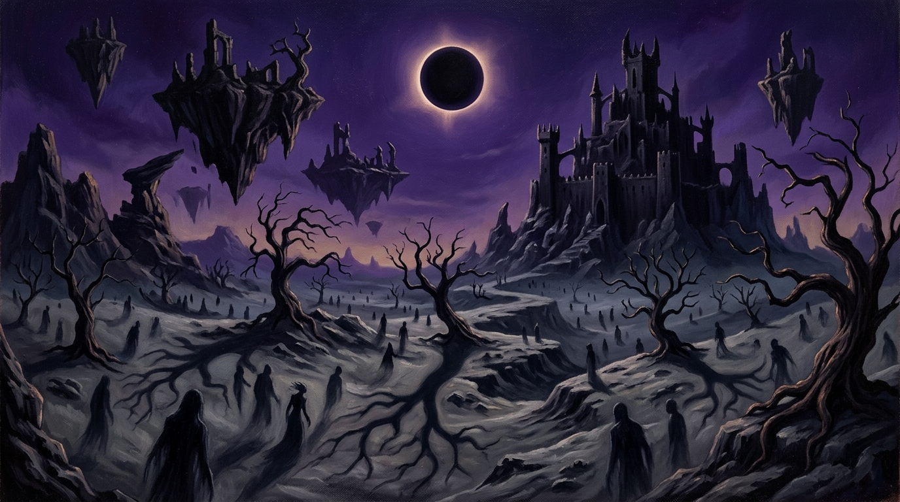
Мир по ту сторону света, где сны обретают плоть. Здесь охотятся кошмары, а правит всем Тиран теней.
| Монстр | Ур. | ❤️ HP | ⚔️ Атака | ✨ Опыт | 🪙 Серебро | 🎁 Дроп |
|---|---|---|---|---|---|---|
| Сумеречный волк | 90 | 5500 | 215 | 7800 | 1500–3000 | 🔵 Теневой шёлк 45% 🟠 Титаническое зелье лечения 6% 🔵 Самоцвет 14% |
| Кошмар | 95 | 5900 | 222 | 8300 | 1550–3100 | 🔵 Теневой шёлк 50% 🟣 Грива кошмара 18% 🔵 Самоцвет 14% |
| Тёмный жнец | 100 | 6400 | 230 | 8900 | 1650–3300 | 🟣 Грива кошмара 35% 🟠 Покров теней 2% 🔵 Самоцвет 14% |
| Тиран теней | 105 | 6900 | 238 | 9500 | 1700–3400 | 🟣 Грива кошмара 45% 🟠 Коса кошмаров 2% 🟠 Титаническое зелье лечения 8% 🔵 Самоцвет 15% |
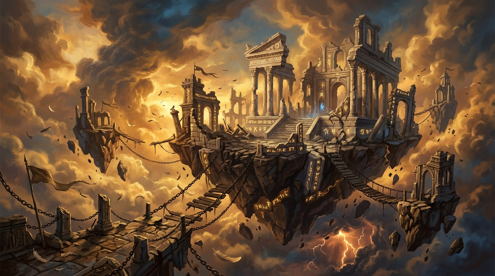
Обломки летающей крепости древних, парящие среди грозовых туч. Их стерегут падшие серафимы и астральные колоссы.
| Монстр | Ур. | ❤️ HP | ⚔️ Атака | ✨ Опыт | 🪙 Серебро | 🎁 Дроп |
|---|---|---|---|---|---|---|
| Дух бури | 110 | 7200 | 247 | 10200 | 1900–3800 | 🔵 Осколок звезды 45% 🟠 Титаническое зелье лечения 7% 🔵 Самоцвет 15% |
| Небесный страж | 115 | 7700 | 255 | 10800 | 1950–3900 | 🔵 Осколок звезды 50% 🟣 Перо серафима 18% 🔵 Самоцвет 15% |
| Падший серафим | 121 | 8300 | 264 | 11500 | 2050–4100 | 🟣 Перо серафима 35% 🟠 Небесная эгида 2% 🔵 Самоцвет 15% |
| Астральный колосс | 126 | 8900 | 272 | 12300 | 2100–4200 | 🟣 Перо серафима 45% 🟠 Клинок звездопада 2% 🟠 Титаническое зелье лечения 8% 🔵 Самоцвет 16% |
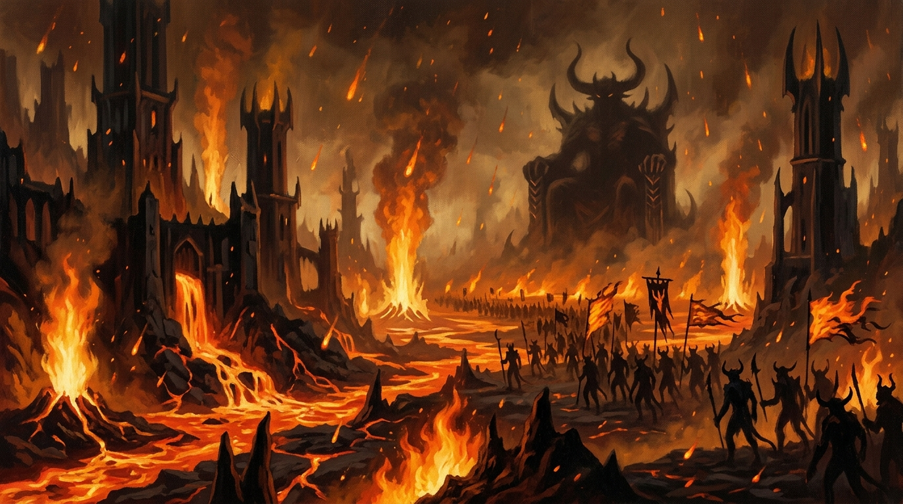
Врата в самое сердце ада: реки лавы, чёрные крепости и легионы демонов под знамёнами Владыки ямы.
| Монстр | Ур. | ❤️ HP | ⚔️ Атака | ✨ Опыт | 🪙 Серебро | 🎁 Дроп |
|---|---|---|---|---|---|---|
| Адская гончая | 130 | 9200 | 280 | 13000 | 2300–4600 | 🔵 Уголь адского пламени 45% 🟠 Титаническое зелье лечения 7% 🔵 Самоцвет 16% |
| Лавовый демон | 135 | 9800 | 288 | 13700 | 2400–4800 | 🔵 Уголь адского пламени 50% 🟣 Сердце демона 18% 🔵 Самоцвет 16% |
| Рыцарь преисподней | 141 | 10500 | 296 | 14500 | 2500–5000 | 🟣 Сердце демона 35% 🟠 Бастион преисподней 2% 🔵 Самоцвет 16% |
| Владыка ямы | 146 | 11200 | 304 | 15400 | 2600–5200 | 🟣 Сердце демона 45% 🟠 Меч адского пламени 2% 🟠 Титаническое зелье лечения 9% 🔵 Самоцвет 17% |
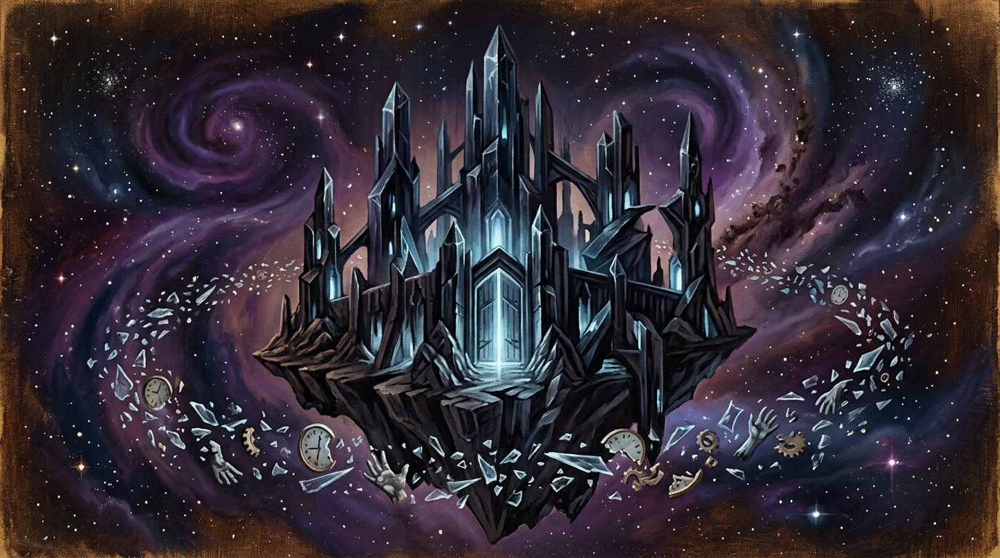
Крепость за гранью бытия, где время рассыпается в прах. Пустота смотрит в ответ — и посылает своих архонтов.
| Монстр | Ур. | ❤️ HP | ⚔️ Атака | ✨ Опыт | 🪙 Серебро | 🎁 Дроп |
|---|---|---|---|---|---|---|
| Рыцарь пустоты | 152 | 10000 | 312 | 16300 | 2800–5600 | 🟣 Осколок пустоты 45% 🟠 Титаническое зелье лечения 8% 🔵 Самоцвет 17% |
| Пожиратель разума | 157 | 10600 | 320 | 17100 | 2900–5800 | 🟣 Осколок пустоты 50% 🟠 Прах вечности 18% 🔵 Самоцвет 17% |
| Страж вечности | 163 | 11300 | 329 | 18100 | 3000–6000 | 🟠 Прах вечности 35% 🟠 Латы пустотной стали 2% 🔵 Самоцвет 17% |
| Архонт пустоты | 168 | 12000 | 337 | 19000 | 3100–6200 | 🟠 Прах вечности 45% 🟠 Жнец вечности 2% 🟠 Титаническое зелье лечения 10% 🔵 Самоцвет 18% |
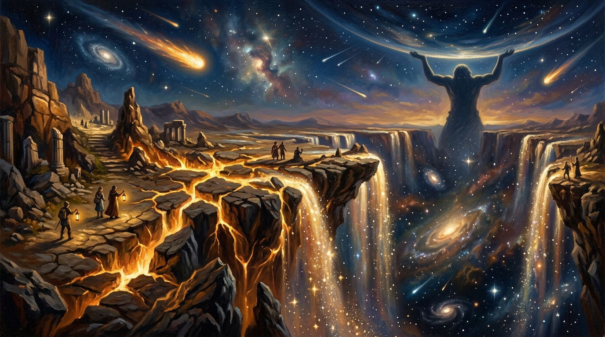
Последний рубеж мироздания. Здесь звёзды падают в бездну, а Разрушитель миров ждёт достойного противника.
| Монстр | Ур. | ❤️ HP | ⚔️ Атака | ✨ Опыт | 🪙 Серебро | 🎁 Дроп |
|---|---|---|---|---|---|---|
| Зверь хаоса | 175 | 12600 | 346 | 20200 | 3400–6800 | 🟣 Кристалл хаоса 45% 🟠 Титаническое зелье лечения 9% 🔵 Самоцвет 18% |
| Пожиратель звёзд | 180 | 13300 | 354 | 21100 | 3500–7000 | 🟣 Кристалл хаоса 50% 🟠 Искра мироздания 18% 🔵 Самоцвет 18% |
| Первородный титан | 185 | 14000 | 362 | 22100 | 3650–7300 | 🟠 Искра мироздания 35% 🟠 Доспех мироздания 2% 🔵 Самоцвет 18% |
| Разрушитель миров | 190 | 14800 | 370 | 23200 | 3800–7600 | 🟠 Искра мироздания 45% 🟠 Крушитель миров 2% 🟣 Кристалл хаоса 25% 🟠 Титаническое зелье лечения 10% 🔵 Самоцвет 20% |
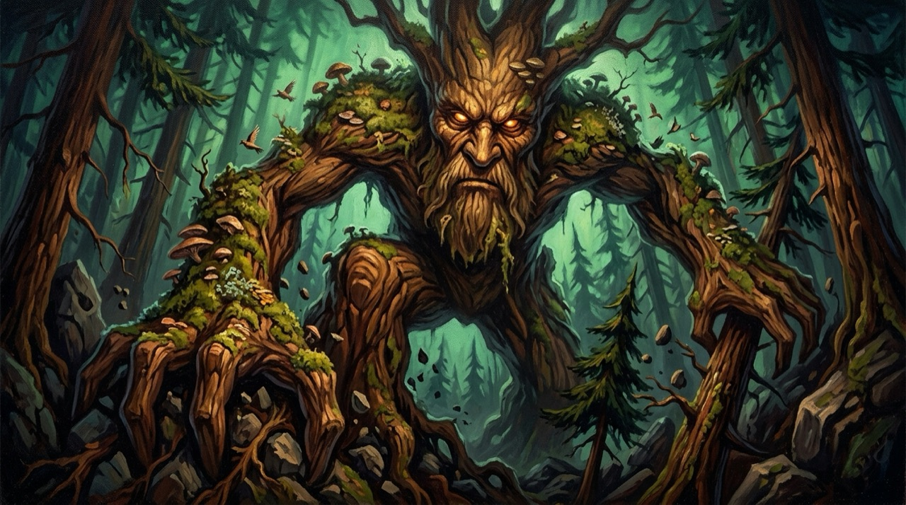
💰 Общая награда: 🪙 1 500 + ✨ 2 000 — делится по нанесённому урону
🏆 Трофеи топ-3 по урону:
1. 🟢 Стальной топор
2. 🔵 Большое зелье лечения
3. 🟢 Среднее зелье лечения
Самоцветы топ-3: 💎 3 / 2 / 1
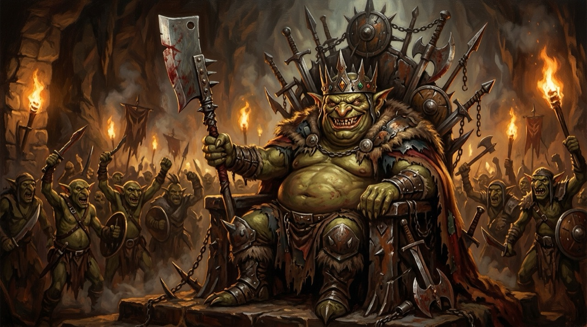
💰 Общая награда: 🪙 3 000 + ✨ 4 500 — делится по нанесённому урону
🏆 Трофеи топ-3 по урону:
1. 🔵 Клинок рыцаря
2. 🟢 Кольчуга
3. 🔵 Большое зелье лечения
Самоцветы топ-3: 💎 3 / 2 / 1
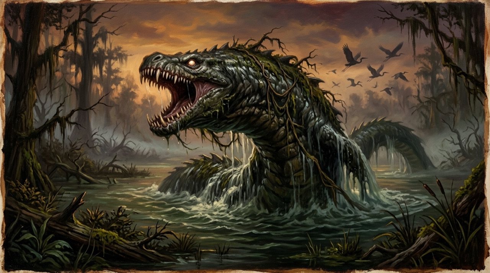
💰 Общая награда: 🪙 6 000 + ✨ 9 000 — делится по нанесённому урону
🏆 Трофеи топ-3 по урону:
1. 🔵 Боевой молот
2. 🔵 Латный доспех
3. 🟢 Серебряная сабля
Самоцветы топ-3: 💎 3 / 2 / 1
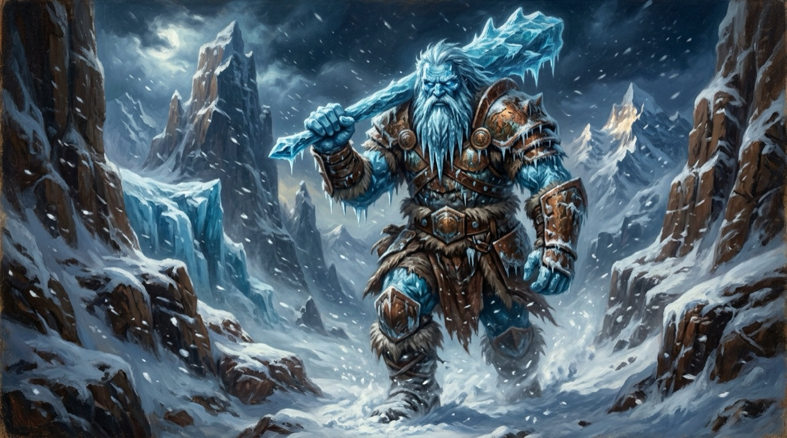
💰 Общая награда: 🪙 10 000 + ✨ 16 000 — делится по нанесённому урону
🏆 Трофеи топ-3 по урону:
1. 🟣 Пламенный меч
2. 🟣 Зачарованная мантия
3. 🔵 Боевой молот
Самоцветы топ-3: 💎 3 / 2 / 1
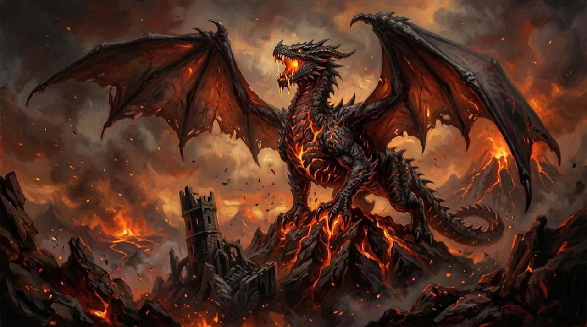
💰 Общая награда: 🪙 20 000 + ✨ 30 000 — делится по нанесённому урону
🏆 Трофеи топ-3 по урону:
1. 🟠 Драконобой
2. 🟠 Доспех из драконьей чешуи
3. 🟣 Кинжал теней
Самоцветы топ-3: 💎 3 / 2 / 1
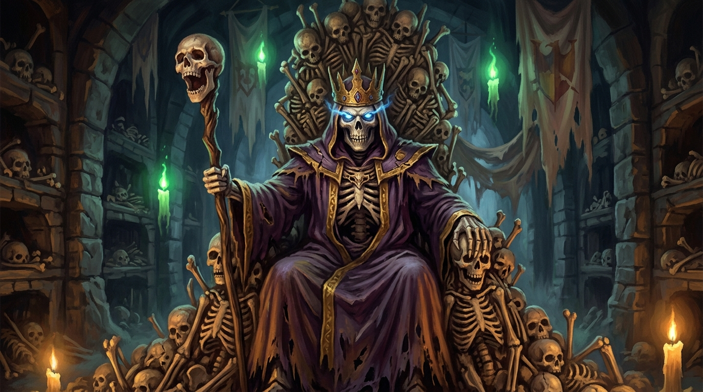
💰 Общая награда: 🪙 32 000 + ✨ 50 000 — делится по нанесённому урону
🏆 Трофеи топ-3 по урону:
1. 🟣 Обсидиановый клинок
2. 🟣 Костяной доспех
3. 🟣 Великое зелье лечения
Самоцветы топ-3: 💎 3 / 2 / 1
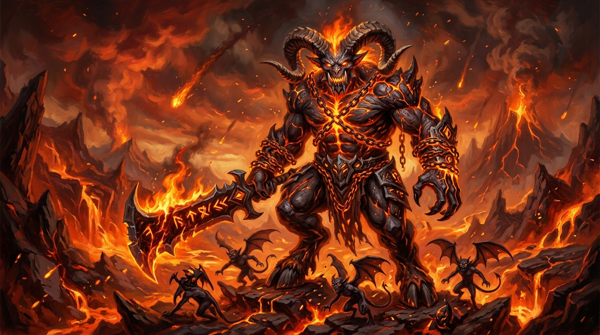
💰 Общая награда: 🪙 50 000 + ✨ 80 000 — делится по нанесённому урону
🏆 Трофеи топ-3 по урону:
1. 🟣 Демонический тесак
2. 🟣 Адская кольчуга
3. 🟣 Великое зелье лечения
Самоцветы топ-3: 💎 3 / 2 / 1
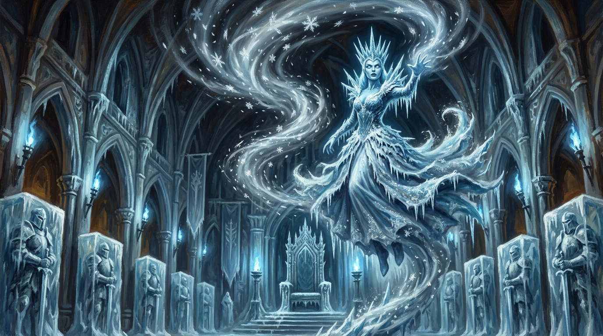
💰 Общая награда: 🪙 75 000 + ✨ 125 000 — делится по нанесённому урону
🏆 Трофеи топ-3 по урону:
1. 🟠 Секира вечной зимы
2. 🟠 Ледниковая броня
3. 🟣 Великое зелье лечения
Самоцветы топ-3: 💎 3 / 2 / 1
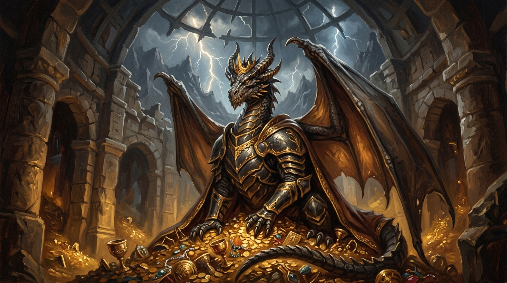
💰 Общая награда: 🪙 120 000 + ✨ 200 000 — делится по нанесённому урону
🏆 Трофеи топ-3 по урону:
1. 🟠 Клинок Повелителя драконов
2. 🟠 Латы Повелителя драконов
3. 🟣 Кристалл разлома
Самоцветы топ-3: 💎 3 / 2 / 1
⏳ Следующий босс — через ~12 ч после победы
| Предмет | Характеристика | 🪙 Цена | Где добыть |
|---|---|---|---|
| ⚪️ Ржавый меч | ⚔️ Атака +2 🎖 с 1 ур. | 15 | 🛒 лавка |
| ⚪️ Деревянная дубина | ⚔️ Атака +3 🎖 с 1 ур. | 25 | Лесной паук 6% · 🛒 лавка |
| ⚪️ Охотничий лук | ⚔️ Атака +4 🎖 с 2 ур. | 45 | Гоблин-разведчик 5% · 🛒 лавка |
| ⚪️ Железный меч | ⚔️ Атака +6 🎖 с 4 ур. | 90 | Гоблин-воин 6% · 🛒 лавка |
| 🟢 Стальной топор | ⚔️ Атака +9 🎖 с 5 ур. | 180 | Пещерный тролль 7% · 🛒 лавка · 🐲 босс (топ-3) |
| 🟢 Серебряная сабля | ⚔️ Атака +12 🎖 с 8 ур. | 320 | Упырь 5% · 🛒 лавка · 🐲 босс (топ-3) |
| 🔵 Клинок рыцаря | ⚔️ Атака +16 🎖 с 12 ур. | 650 | Болотный ужас 5% · Проклятый рыцарь 8% · 🐲 босс (топ-3) |
| 🔵 Боевой молот | ⚔️ Атака +20 🎖 с 15 ур. | 1000 | Каменный голем 5% · 🐲 босс (топ-3) |
| 🟣 Пламенный меч | ⚔️ Атака +26 🎖 с 19 ур. | 2200 | Лорд-вампир 5% · 🐲 босс (топ-3) |
| 🟣 Кинжал теней | ⚔️ Атака +30 🎖 с 21 ур. | 3200 | Призрак 4% · 🐲 босс (топ-3) |
| 🟠 Драконобой | ⚔️ Атака +40 🎖 с 25 ур. | 8000 | 🐲 босс (топ-3) |
| 🟣 Обсидиановый клинок | ⚔️ Атака +50 🎖 с 26 ур. | 14000 | Могильный призрак 4% · Прислужник лича 5% · 🐲 босс (топ-3) |
| 🟣 Демонический тесак | ⚔️ Атака +62 🎖 с 33 ур. | 24000 | Пламенный джинн 5% · 🐲 босс (топ-3) |
| 🟠 Секира вечной зимы | ⚔️ Атака +75 🎖 с 39 ур. | 38000 | Снежный тролль 2% · 🐲 босс (топ-3) |
| 🟠 Клинок Повелителя драконов | ⚔️ Атака +90 🎖 с 45 ур. | 65000 | Драконий жрец 2% · Древний дракон 2% · 🐲 босс (топ-3) |
| 🟣 Клинок бездны | ⚔️ Атака +110 🎖 с 52 ур. | 45000 | Владыка бездны 2% |
| 🟣 Клык кракена | ⚔️ Атака +135 🎖 с 70 ур. | 70000 | Жрец кракена 2% |
| 🟠 Коса кошмаров | ⚔️ Атака +165 🎖 с 90 ур. | 110000 | Тиран теней 2% |
| 🟠 Клинок звездопада | ⚔️ Атака +200 🎖 с 110 ур. | 170000 | Астральный колосс 2% |
| 🟠 Меч адского пламени | ⚔️ Атака +240 🎖 с 130 ур. | 260000 | Владыка ямы 2% |
| 🟠 Жнец вечности | ⚔️ Атака +285 🎖 с 152 ур. | 400000 | Архонт пустоты 2% |
| 🟠 Крушитель миров | ⚔️ Атака +340 🎖 с 175 ур. | 600000 | Разрушитель миров 2% |
| Предмет | Характеристика | 🪙 Цена | Где добыть |
|---|---|---|---|
| ⚪️ Холщовая рубаха | 🛡 Защита +1 🎖 с 1 ур. | 12 | 🛒 лавка |
| ⚪️ Кожаный доспех | 🛡 Защита +3 🎖 с 1 ур. | 60 | 🛒 лавка |
| 🟢 Кольчуга | 🛡 Защита +6 🎖 с 5 ур. | 200 | Скелет 4% · 🛒 лавка · 🐲 босс (топ-3) |
| 🟢 Чешуйчатый доспех | 🛡 Защита +8 🎖 с 9 ур. | 380 | Гарпия 5% · 🛒 лавка |
| 🔵 Латный доспех | 🛡 Защита +12 🎖 с 15 ур. | 800 | Огр 5% · 🐲 босс (топ-3) |
| 🟣 Зачарованная мантия | 🛡 Защита +16 🎖 с 20 ур. | 2500 | Горгулья 4% · 🐲 босс (топ-3) |
| 🟠 Доспех из драконьей чешуи | 🛡 Защита +24 🎖 с 25 ур. | 9000 | 🐲 босс (топ-3) |
| 🟣 Костяной доспех | 🛡 Защита +30 🎖 с 26 ур. | 14000 | Костяной рыцарь 4% · 🐲 босс (топ-3) |
| 🟣 Адская кольчуга | 🛡 Защита +37 🎖 с 33 ур. | 23000 | Магмовый голем 4% · 🐲 босс (топ-3) |
| 🟠 Ледниковая броня | 🛡 Защита +45 🎖 с 39 ур. | 36000 | Ледяная тень 2% · Ледяная виверна 2% · 🐲 босс (топ-3) |
| 🟠 Латы Повелителя драконов | 🛡 Защита +54 🎖 с 45 ур. | 60000 | Древний дракон 2% · 🐲 босс (топ-3) |
| 🟣 Панцирь бездны | 🛡 Защита +66 🎖 с 52 ур. | 42000 | Ужас тьмы 2% |
| 🟣 Кольчуга глубин | 🛡 Защита +80 🎖 с 70 ур. | 65000 | Страж глубин 2% |
| 🟠 Покров теней | 🛡 Защита +98 🎖 с 90 ур. | 100000 | Тёмный жнец 2% |
| 🟠 Небесная эгида | 🛡 Защита +120 🎖 с 110 ур. | 160000 | Падший серафим 2% |
| 🟠 Бастион преисподней | 🛡 Защита +145 🎖 с 130 ур. | 240000 | Рыцарь преисподней 2% |
| 🟠 Латы пустотной стали | 🛡 Защита +175 🎖 с 152 ур. | 380000 | Страж вечности 2% |
| 🟠 Доспех мироздания | 🛡 Защита +210 🎖 с 175 ур. | 560000 | Первородный титан 2% |
| Предмет | Характеристика | 🪙 Цена | Где добыть |
|---|---|---|---|
| ⚪️ Малое зелье лечения | ❤️ Лечит 30 | 10 | Лесной волк 10% · Дикий кабан 10% · 🛒 лавка |
| 🟢 Среднее зелье лечения | ❤️ Лечит 90 | 35 | Пещерный тролль 15% · Горный волк 15% · 🛒 лавка · ⚗️ алхимик · 🐲 босс (топ-3) |
| 🔵 Большое зелье лечения | ❤️ Лечит 250 | 110 | Болотная ведьма 12% · Огр 15% · Упырь склепа 8% · Прислужник лича 12% · 🛒 лавка · ⚗️ алхимик · 🐲 босс (топ-3) |
| 🟣 Великое зелье лечения | ❤️ Лечит 600 | 300 | Огненный бес 5% · Морозный волк 6% · Драконий жрец 10% · Порождение бездны 8% · Владыка бездны 10% · 🛒 лавка · ⚗️ алхимик · 🐲 босс (топ-3) |
| 🟠 Титаническое зелье лечения | ❤️ Лечит 1600 | 800 | Утопший моряк 5% · Жрец кракена 7% · Сумеречный волк 6% · Тиран теней 8% · Дух бури 7% · Астральный колосс 8% · Адская гончая 7% · Владыка ямы 9% · Рыцарь пустоты 8% · Архонт пустоты 10% · Зверь хаоса 9% · Разрушитель миров 10% · 🛒 лавка · ⚗️ алхимик |
| 🟢 Зелье силы | +25% атаки на 5 боёв (кроме арены) | 60 | 🛒 лавка · ⚗️ алхимик |
| 🟢 Зелье каменной кожи | +25% защиты на 5 боёв (кроме арены) | 60 | 🛒 лавка · ⚗️ алхимик |
| 🔵 Зелье ярости | шанс крита 25% на 5 боёв (кроме арены) | 90 | 🛒 лавка · ⚗️ алхимик |
| 🔵 Зелье удачи | +50% к шансу добычи на 5 боёв (кроме арены) | 90 | 🛒 лавка · ⚗️ алхимик |
| Предмет | Характеристика | 🪙 Цена | Где добыть |
|---|---|---|---|
| 🔵 Самоцвет | — | 40 | Лесной волк 2% · Дикий кабан 2% · Лесной паук 2% · Гоблин-разведчик 2% · Пещерная летучая мышь 3% · Гоблин-воин 3% · Скелет 3% · Пещерный тролль 3% · Гигантская пиявка 3% · Упырь 3% · Болотная ведьма 3% · Болотный ужас 3% · Горный волк 4% · Гарпия 4% · Каменный голем 4% · Огр 4% · Проклятый рыцарь 5% · Призрак 5% · Горгулья 5% · Лорд-вампир 5% · Упырь склепа 6% · Костяной рыцарь 6% · Могильный призрак 6% · Прислужник лича 6% · Пепельная гончая 7% · Огненный бес 7% · Магмовый голем 7% · Пламенный джинн 7% · Морозный волк 8% · Ледяная тень 8% · Снежный тролль 8% · Ледяная виверна 8% · Сталкер разлома 10% · Юный дрейк 10% · Драконий жрец 10% · Древний дракон 12% · Порождение бездны 12% · Страж бездны 12% · Ужас тьмы 12% · Владыка бездны 13% · Утопший моряк 13% · Сирена 13% · Страж глубин 13% · Жрец кракена 14% · Сумеречный волк 14% · Кошмар 14% · Тёмный жнец 14% · Тиран теней 15% · Дух бури 15% · Небесный страж 15% · Падший серафим 15% · Астральный колосс 16% · Адская гончая 16% · Лавовый демон 16% · Рыцарь преисподней 16% · Владыка ямы 17% · Рыцарь пустоты 17% · Пожиратель разума 17% · Страж вечности 17% · Архонт пустоты 18% · Зверь хаоса 18% · Пожиратель звёзд 18% · Первородный титан 18% · Разрушитель миров 20% · ⚗️ алхимик · 🐲 босс (топ-3) → ⚒️ заточка у кузнеца |
| ⚪️ Волчья шкура | — | 6 | Лесной волк 45% · Горный волк 60% → ⚗️ рецепты алхимика |
| ⚪️ Клык кабана | — | 7 | Дикий кабан 40% → ⚗️ рецепты алхимика |
| 🟢 Паучий шёлк | — | 14 | Лесной паук 35% → ⚗️ рецепты алхимика |
| ⚪️ Ухо гоблина | — | 5 | Гоблин-разведчик 50% · Гоблин-воин 50% → ⚗️ рецепты алхимика |
| ⚪️ Крыло летучей мыши | — | 8 | Пещерная летучая мышь 50% → ⚗️ рецепты алхимика |
| 🟢 Костяная пыль | — | 18 | Скелет 45% → ⚗️ рецепты алхимика |
| 🔵 Шкура тролля | — | 60 | Пещерный тролль 40% → ⚗️ рецепты алхимика |
| ⚪️ Слизь пиявки | — | 10 | Гигантская пиявка 50% → ⚗️ рецепты алхимика |
| 🟢 Коготь упыря | — | 25 | Упырь 45% → ⚗️ рецепты алхимика |
| 🔵 Болотная эссенция | — | 70 | Болотная ведьма 35% · Болотный ужас 50% → ⚗️ рецепты алхимика |
| 🟢 Перо гарпии | — | 30 | Гарпия 50% → ⚗️ рецепты алхимика |
| 🔵 Ядро голема | — | 90 | Каменный голем 35% |
| 🟢 Зуб огра | — | 35 | Огр 50% |
| 🔵 Проклятая эмблема | — | 120 | Проклятый рыцарь 45% · Призрак 50% → ⚗️ рецепты алхимика |
| 🟣 Клык вампира | — | 250 | Лорд-вампир 40% |
| 🟣 Осколок кристалла | — | 300 | Горгулья 30% |
| 🟠 Древняя реликвия | — | 1000 | Лорд-вампир 2% |
| ⚪️ Могильный прах | — | 22 | Упырь склепа 50% · Костяной рыцарь 40% → ⚗️ рецепты алхимика |
| 🟢 Кость лича | — | 45 | Костяной рыцарь 25% · Могильный призрак 45% · Прислужник лича 50% → ⚗️ рецепты алхимика |
| 🟢 Тлеющий осколок | — | 60 | Пепельная гончая 50% · Огненный бес 45% → ⚗️ рецепты алхимика |
| 🔵 Рог демона | — | 110 | Огненный бес 20% · Магмовый голем 35% · Пламенный джинн 45% → ⚗️ рецепты алхимика |
| 🟢 Вечный лёд | — | 90 | Морозный волк 50% · Ледяная тень 45% · Снежный тролль 40% → ⚗️ рецепты алхимика |
| 🔵 Чешуя виверны | — | 160 | Ледяная виверна 50% · Юный дрейк 30% → ⚗️ рецепты алхимика |
| 🔵 Драконья кровь | — | 220 | Сталкер разлома 40% · Юный дрейк 45% · Древний дракон 50% → ⚗️ рецепты алхимика |
| 🟣 Кристалл разлома | — | 400 | Сталкер разлома 12% · Драконий жрец 30% · Древний дракон 25% · 🐲 босс (топ-3) → ⚗️ рецепты алхимика |
| 🔵 Эссенция бездны | — | 300 | Порождение бездны 50% · Страж бездны 45% → ⚗️ рецепты алхимика |
| 🟣 Жемчужина бездны | — | 500 | Страж бездны 20% · Ужас тьмы 35% · Владыка бездны 45% |
| 🔵 Чешуя сирены | — | 380 | Утопший моряк 45% · Сирена 50% → ⚗️ рецепты алхимика |
| 🟣 Чернила кракена | — | 650 | Сирена 18% · Страж глубин 35% · Жрец кракена 45% |
| 🔵 Теневой шёлк | — | 480 | Сумеречный волк 45% · Кошмар 50% → ⚗️ рецепты алхимика |
| 🟣 Грива кошмара | — | 820 | Кошмар 18% · Тёмный жнец 35% · Тиран теней 45% → ⚗️ рецепты алхимика |
| 🔵 Осколок звезды | — | 600 | Дух бури 45% · Небесный страж 50% |
| 🟣 Перо серафима | — | 1050 | Небесный страж 18% · Падший серафим 35% · Астральный колосс 45% → ⚗️ рецепты алхимика |
| 🔵 Уголь адского пламени | — | 750 | Адская гончая 45% · Лавовый демон 50% |
| 🟣 Сердце демона | — | 1350 | Лавовый демон 18% · Рыцарь преисподней 35% · Владыка ямы 45% |
| 🟣 Осколок пустоты | — | 950 | Рыцарь пустоты 45% · Пожиратель разума 50% → ⚗️ рецепты алхимика |
| 🟠 Прах вечности | — | 1700 | Пожиратель разума 18% · Страж вечности 35% · Архонт пустоты 45% |
| 🟣 Кристалл хаоса | — | 1200 | Зверь хаоса 45% · Пожиратель звёзд 50% · Разрушитель миров 25% |
| 🟠 Искра мироздания | — | 2200 | Пожиратель звёзд 18% · Первородный титан 35% · Разрушитель миров 45% |
Кузнец на рыночной площади точит экипированное оружие и броню — до +12. Каждый уровень заточки даёт +4% к характеристике предмета (минимум +1 за каждые 3 уровня).
Стоимость попытки: серебро (12% цены предмета × целевой уровень) + самоцветы 💎.
⚠️ До +6 — безопасно. С +7 провал снижает заточку на 1 уровень (серебро и самоцветы сгорают).
| Заточка | 💎 Самоцветы | 🎯 Шанс | При провале |
|---|---|---|---|
| +1 | 1 | 100% | — |
| +2 | 1 | 100% | — |
| +3 | 1 | 100% | — |
| +4 | 2 | 100% | — |
| +5 | 2 | 100% | — |
| +6 | 2 | 100% | — |
| +7 | 3 | 80% | −1 уровень |
| +8 | 3 | 70% | −1 уровень |
| +9 | 3 | 60% | −1 уровень |
| +10 | 4 | 50% | −1 уровень |
| +11 | 4 | 40% | −1 уровень |
| +12 | 4 | 30% | −1 уровень |
Алхимик на рыночной площади варит зелья из трофеев ваших охот — дешевле, чем покупать готовые в лавке. Боевые зелья действуют указанное число боёв (заряд тратится при входе в бой, на арене баффы отключены).
+25% атаки на 5 боёв (кроме арены)
Ингредиенты:
⚪️ Волчья шкура ×2
⚪️ Клык кабана ×1
💰 Работа: 25 🪙
+25% защиты на 5 боёв (кроме арены)
Ингредиенты:
🟢 Костяная пыль ×2
⚪️ Крыло летучей мыши ×2
💰 Работа: 25 🪙
шанс крита 25% на 5 боёв (кроме арены)
Ингредиенты:
🟢 Паучий шёлк ×1
🟢 Коготь упыря ×1
💰 Работа: 40 🪙
+50% к шансу добычи на 5 боёв (кроме арены)
Ингредиенты:
⚪️ Ухо гоблина ×2
⚪️ Крыло летучей мыши ×2
💰 Работа: 40 🪙
❤️ Лечит 90
Ингредиенты:
⚪️ Слизь пиявки ×2
💰 Работа: 10 🪙
❤️ Лечит 250
Ингредиенты:
🔵 Болотная эссенция ×1
🔵 Шкура тролля ×1
💰 Работа: 30 🪙
❤️ Лечит 600
Ингредиенты:
🔵 Драконья кровь ×1
🟢 Вечный лёд ×1
💰 Работа: 60 🪙
+25% атаки на 5 боёв (кроме арены)
Ингредиенты:
⚪️ Могильный прах ×2
🔵 Рог демона ×1
💰 Работа: 60 🪙
+25% защиты на 5 боёв (кроме арены)
Ингредиенты:
🟢 Кость лича ×2
🟢 Вечный лёд ×1
💰 Работа: 60 🪙
шанс крита 25% на 5 боёв (кроме арены)
Ингредиенты:
🟢 Тлеющий осколок ×2
🔵 Чешуя виверны ×1
💰 Работа: 90 🪙
+50% к шансу добычи на 5 боёв (кроме арены)
Ингредиенты:
🟢 Перо гарпии ×2
🔵 Проклятая эмблема ×1
💰 Работа: 90 🪙
—
Ингредиенты:
🟣 Кристалл разлома ×1
💰 Работа: 100 🪙
❤️ Лечит 1600
Ингредиенты:
🔵 Эссенция бездны ×2
🔵 Чешуя сирены ×1
💰 Работа: 120 🪙
—
Ингредиенты:
🟣 Осколок пустоты ×1
💰 Работа: 250 🪙
+25% атаки на 5 боёв (кроме арены)
Ингредиенты:
🔵 Теневой шёлк ×1
💰 Работа: 100 🪙
+25% защиты на 5 боёв (кроме арены)
Ингредиенты:
🔵 Чешуя сирены ×1
💰 Работа: 120 🪙
шанс крита 25% на 5 боёв (кроме арены)
Ингредиенты:
🟣 Грива кошмара ×1
💰 Работа: 80 🪙
+50% к шансу добычи на 5 боёв (кроме арены)
Ингредиенты:
🟣 Перо серафима ×1
💰 Работа: 100 🪙
Опыт дают победы над монстрами, задания и мировой босс. За каждый уровень: +3 очка характеристик (⚔️ сила / 🛡 защита / ❤️ живучесть) и +5 к макс. HP. Здоровье полностью восстанавливается при новом уровне.
Вне боя HP восстанавливается само: 1 HP каждые 20 секунд. Лекарь в деревне лечит полностью за серебро (5 🪙 × ваш уровень).
Проигрыш в PvE: вы приходите в себя в деревне с 30% HP и теряете 10% серебра. На арене здоровье не тратится — бои тренировочные.
PvP по рейтингу (±5 уровней): победа +25 рейтинга и серебро, поражение −20. Баффы алхимика на арене не действуют.
Общий враг всех игроков. Награда делится пропорционально нанесённому урону, топ-3 получают редкие трофеи и самоцветы. Новый босс — через 12 часов после победы; за серебро его можно приманить раньше.
К боссу не подступиться в одиночку: сначала разбейте лагерь и соберите отряд (минимум героев зависит от босса, недостающих заменяют наёмники за серебро). Сбор — 10 минут, штурм длится 2 часа.
Каждая победа подряд в локации даёт +2% к атаке и защите (до +20%). Кураж пропадает, если уехать из локации или пасть в бою.
Кнопка «Клан» в профиле: создайте клан (1000 🪙) или вступите в существующий. Взносы в казну повышают уровень клана — каждый уровень со 2-го даёт всем бойцам +1% к атаке и защите.
Лавка покупает вещи за половину цены (трофеи можно продать все разом одной кнопкой). На рыночной площади можно выставить лот для других игроков — цену выбираете сами.
Кнопка «Идея» в профиле — предложения попадают напрямую разработчикам. Лучшие идеи игроков уже в игре!
| Уровень | Нужно опыта |
|---|---|
| 1 | 100 |
| 2 | 263 |
| 3 | 465 |
| 5 | 951 |
| 8 | 1 837 |
| 10 | 2 511 |
| 15 | 4 431 |
| 20 | 6 628 |
| 25 | 9 059 |
| 30 | 11 694 |
| 40 | 17 493 |
| 50 | 23 908 |
| 70 | 38 294 |
| 100 | 63 095 |
| 130 | 91 100 |
| 152 | 113 391 |
| 175 | 138 118 |
| 190 | 154 972 |